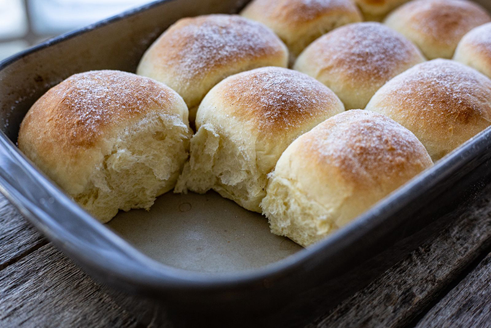

Celozrnné pečené buchty so slivkovým lekvárom
Raňajky, desiata či sladká večera.

Ingrediencie
-
175 gpolohrubá múka
-
175 gcelozrnná múka
-
25 gčerstvé droždie
-
200 mlvlažné mlieko
-
1 štipkasoľ
-
40 gkryštálový cukor
-
1 ksźĺtok
-
2 ksmalé zemiaky
-
25gmäkké maslo
-
slivkový lekvár
-
trochurozpustené maslo na potretie
Postup
-
1Zemiaky očistíme, nakrájame, varíme do mäkka a nechám vychladnúť.
-
2Droždie vymiešame s lyžicou cukru a vlažným mliekom do hladka, potom necháme postáť (asi 10 minút).
-
3Múku preosejeme, zmiešame so zvyškom cukru a soľou, pridáme pretlačené uvarené zemiaky a maslo, pridáme žĺtok a kvások. Cesto by malo byť mäkké a mierne lepkavé. Ak je príliš lepivé, pridáme ešte trochu múky, alebo ak nie je dostatočne mäkké, zjemníme ho pridaním trochy mäkkého masla.
-
4Hotové cesto prikryjeme a necháme kysnúť, kým nezdvojnásobí svoj objem.
-
5Po vykysnutí cesto rozvaľkáme na veľký obdĺžnik s hrúbkou asi 3 - 4 mm a nakrájame ho na 12 väčších alebo 24 menších štvorcov. Do stredu každého z nich dáme slivkový lekvár, potom cesto dobre uzavrieme, aby lekvár počas pečenia nevytiekol, a vytvarujeme ho do malých bochníkov.
-
6Do vymasteného a múkou vysypeného pekáča poukladáme buchtičky, potrieme ich maslom a a necháme zakryté ešte 15 minút podkysnúť.
-
7Buchty pečieme v predhriatej rúre s ventilátorom pri 180°C približne 15 minút do zlatista. Po upečení ich na 5 minút prikryjeme čistou utierkou, aby dobre zmäkli, a potom ich podávame posypané práškovým cukrom.
Bon Appétit
Dúfam, že sa vám tento recept páčil a prinesie vám do kuchyne mnoho radosti a chutných momentov. Ak ho vyskúšate, podeľte sa so svojimi dojmami a nechajte nám komentár. Prajem dobrú chuť a veľa úspechov pri varení!